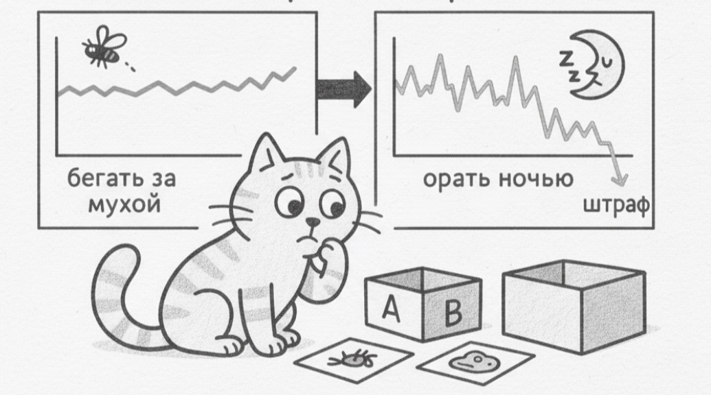

This is the third chapter of the PragmatiC++ draft — a book on pragmatic C++ that still makes sense a year later. The chapter source is open on GitHub.

In C++, function and template overloading has historically been, and remains, a powerful tool for expressing different implementations of one and the same interface. Many see overloads as a convenient way to give one name to different functions, but in practice understanding how the compiler selects the right overload can become a source of bugs and misunderstandings. The compiler is guided by a complex set of rules that we ourselves provided it; it takes into account not only argument types but also the order of specializations, type conversions, const-qualifiers, template parameters and much more. And errors arising from overloading are often hard to diagnose, since the compiler's message may refer to deeply nested implementation details instead of the obvious source code. The previous chapter was about that...
With the introduction of concepts and constraints (requires), the language got the ability to manage this complexity at the interface level. Instead of relying on overloading magic and elaborate tricks like SFINAE, we can now express intentions directly: which properties a type must have for a function or template to be correct — which allowed a shift from the "magic of overload resolution" to a declarative description of the requirements on types.
Let's now talk about what constraints (requires) actually do in modern C++ and why the appearance of this mechanism was such an important step in the evolution of templates. Here we need to step aside a bit and recall that historically templates in C++ were a powerful but rather dangerous tool, another language within the language, in which you could do almost anything if you had the will.
As a result the compiler allowed you to substitute or hack in any type, while the check of whether it "actually fits" was deferred to the moment of instantiation, which often led to an error far from the call site, and the message about the immediate location of the error turned into a multi-page report on the compiler's internal kitchen and how it works with templates. Now requires has changed this model, allowing you to describe expectations of a type explicitly and right in the declaration of a function or class.
In essence requires is a way to impose constraints on template parameters by means of the language, formulating a kind of contract: "take a T that can do this and this." If the type doesn't satisfy these conditions, the template won't even participate in overload resolution, because we exclude the chosen instantiation branch not through a substitution failure (SFINAE) but by excluding the unsuitable variant already at the overload-selection stage. This helps not only the compiler to limit the set of possible variants, but us as well, because now the compiler can produce a short and meaningful message rather than a stream of secondary errors.
Cat != cat
Let's consider a simple example: we have a function that checks the equality of two objects of the same type. It's logical to expect that such a type should support the == operator. Whereas before we'd get the "unsupported" comparison-operation error after the compiler had gone through all possible variants, fallen back on SFINAE a couple of times (we don't see this; it's real bundle or binary build time) and only then printed out a wall of logs, with requires we remove that overhead and move all these checks "before" rather than "during":
template<typename T>
bool check_equality(const T& a, const T& b)
requires std::equality_comparable<T>
{
return a == b;
}Here we explicitly say — this function exists only for those types T that satisfy the std::equality_comparable concept, and if you try to call it with a type that has no == operator, the compiler won't try to "drag" us inside the template but will immediately report: the constraint isn't satisfied — this type isn't equality-comparable. This is a fundamentally different level of feedback compared to classic C++, where a similar error would lead to a chain of messages about a suitable operator not being found somewhere deep down.
This becomes very important when there's more than one condition. In real code functions rarely impose only one requirement on a type, and we might expect a type to behave like an iterator while also supporting a total ordering. Now such conditions can be combined directly in the function declaration:
template<typename T>
void resolve(const T& v)
requires std::forward_iterator<T> && std::totally_ordered<T>;In this case the compiler checks each condition separately, and if the type doesn't satisfy at least one of them, the diagnostic will clearly indicate which requirement was violated. This sharply contrasts with the old SFINAE techniques based on enable_if, partial specializations and strange expressions hacked together via decltype, where the error often looked like "no suitable overload," without any explanation of why exactly it didn't fit.
Simplifying the "overloaded"
Another important aspect is splitting overloads by categories of types. For example, one version of the function works only with integers, and another only with floating-point numbers. Using enable_if we can write them like this:
template<typename T>
typename std::enable_if<std::is_integral<T>::value, void>::type
resolve(T x) {
// Implementation for integers
}
template<typename T>
typename std::enable_if<std::is_floating_point<T>::value, void>::type
resolve(T x) {
// Implementation for reals
}With this approach we get a return type cluttered with technical details. Without practice working with such code, it may be unclear, without comments, what enable_if does. We still have to rely on the template magic of ::value and ::type, and in any case the "what's required" logic is hidden in the function's code.
Or via SFINAE + trailing return, the same solutions seen from the side:
template<typename T>
auto resolve(T x) -> std::enable_if_t<std::is_integral_v<T>> {
// Implementation for integers
}
template<typename T>
auto resolve(T x) -> std::enable_if_t<std::is_floating_point_v<T>> {
// Implementation for reals
}By applying requires we can write several functions with the same name but with different constraints, and thereby express different intentions for different families of types:
template<typename T>
void resolve(T x) requires std::integral<T>;
template<typename T>
void resolve(T x) requires std::floating_point<T>;Here there are no enable_if tricks or hidden conditions, and reading such code, even without deep knowledge of template machinery, you'll easily understand the author's intent that the function's behavior depends on which mathematical category the type belongs to. For a developer this is especially valuable, because requires essentially teaches you to formulate requirements on abstractions clearly, creating an explicit contract in the code (a spec, if you like) rather than hiding the contract in the implementation details of the "business logic."
A bit more about signatures
With requires, if you try to call resolve() with a type that is neither integral nor floating-point, the compiler finds itself in an honest and clear situation: a suitable overload simply doesn't exist. Now the compiler won't guess, won't try to "fit" the type into one of the versions and won't wander off into the depths of template substitutions, but will directly say that neither of the constraints requires std::integral<T> and requires std::floating_point<T> is satisfied. For a developer this looks like a normal, logical interface error.
Why does all this even work? The thing is that, from the compiler's standpoint, functions with the same name and formally the same parameters but with different requires conditions are considered different functions. This may seem unexpected if we're used to thinking about overloading only through the parameter list, but the C++ standard explicitly fixes the rule: two functions are considered one and the same entity only if they have equivalent parameters and equivalent requires conditions.
In other words, constraints are now part of a function's signature at the language level. But it's important to understand a subtle yet fundamental point: requires is part of a function's interface but "doesn't participate in / doesn't affect mangling." This means that from the linking standpoint no name conflict arises, while from the compiler's standpoint, at the overload-selection stage, different candidates appear, each with its own applicability conditions, so such code is absolutely legal (the logical function names inside the compiler will be different):
template<typename T>
void resolve(T t) requires (sizeof(T) > 4)
-> resolve_t_sizeof_gr_4
template<typename T>
void resolve(T t) requires (sizeof(T) <= 4)
-> resolve_t_sizeof_ls_4When we call resolve with a concrete type, the compiler first substitutes that type, then checks the constraints and simply picks the version for which the logical expression in requires is true — and there's no magic here, as there was with templates; now it's an ordinary overload selection, but with an additional filter in the form of conditions.
At this point it's important not to forget about a typical pitfall of constraints — if the requires conditions aren't mutually exclusive, we can easily get an ambiguity. We can imagine an example like this:
template<typename T>
void resolve(T t) requires (sizeof(T) >= 3);
template<typename T>
void resolve(T t) requires (sizeof(T) <= 4);In this case, for the type int both conditions will be true simultaneously, and from the compiler's standpoint both overloads are equally good. Neither overload is more specialized, which as a result leads us to an ambiguous-call error. An ambiguous call isn't a bug or a quirk of the implementation, but a consequence of the fact that we ourselves described overlapping contracts, so when designing interfaces with requires you need to make them as clear as possible: either the conditions must be strictly separated, or one version must be stricter and explicitly dominate the other.
Let's discuss one more important side of requires, which can be not only a simple logical filter, as in the examples above, but also a tool for checking the correctness of expressions. Especially when we're interested not in numeric conditions like sizeof(T) > 4 but in the very fact of the existence of an operation or expression for a given type. For this the language provides so-called requires-expressions, most often used when defining concepts: we can describe the concept of equality comparability as follows:
template<typename T, typename U>
concept entity_comparable = requires(T a, U b) {
{ a == b } -> std::convertible_to<bool>;
};It looks more like pseudocode than ordinary C++. But here it's just a condition for the compiler: for types T and U there must exist objects a and b such that the expression a == b compiles, and its result can be converted to bool, and if at least one of these requirements isn't met (the == operator isn't defined or returns a strange type) the contract is considered unsatisfied.
As in the cases above, the error will be local and pinpointed, and the compiler will point exactly at the expression it failed to verify, which lets you formulate requirements on types in terms of the language rather than in terms of compilation side effects, like void substitution or SFINAE. We describe not "what will break if the type is unsuitable," but "what a suitable type should be," and that's exactly why requires and concepts are so well suited to replacing templates in already-working projects, refining the scope of work and making it stricter, instead of the old "let's try and see what the compiler says" approach.
Simple and complex requires
If you're only just starting to work with requires, in the simplest variant it will look like an ordinary logical expression evaluated at compile time, which looks and behaves the same as a constexpr bool. We check some property of a type, get true or false, and depending on that the function either participates in overloading or doesn't. Most replacements of template conditions come down to such cases: checks of sizes, alignment, membership in a category of types, various std::is_* and standard-library concepts, which themselves come down to logical conditions.
But after working for a while you'll notice there's also a more powerful, "complex" form of requires, when we're interested not just in the value of some predicate but in the correctness of the operation itself. Then we ask the compiler: "can such an expression be written at all for this type?"; "if it can, what does it return?"; "does it have additional properties, for example a guarantee of no exceptions?" This is no longer abstract logic but a direct check of the syntax and semantics of the code at compile time.
The construct requires { ++a; } means: for a given type there must exist a prefix increment operation, and the expression ++a must be valid. We say nothing about what it returns, and nothing about side properties in the simple case. We're simply interested in the very fact of the applicability of the ++ operation, but if we write requires { ++a } noexcept; then we add one more, subtler requirement: the operation must not only exist but also be marked as non-throwing, thus bringing us to the fact that requirements on the working logic can be formulated at the level of contracts.
When there are many requirements, writing them right in the function declaration becomes inconvenient and hard to read. Long chains of conditions in requires quickly turn into noise behind which it's hard to understand what the author wanted to convey, which is why concepts were introduced into the language. A concept is, in essence, a named set of requirements to which we give a meaningful name and then use as a building block for other computations. Suppose we want to express the idea that "type T can be implicitly converted to type U." We can formalize this as a concept:
template<typename T, typename U>
concept CanConvertTo = std::is_convertible_v<T, U>;After this the name CanConvertTo becomes part of our vocabulary of concepts, and we can use it in template parameters without spelling out the details of the check every time.
template<CanConvertTo<int> T>
void resolve(T value);Or we can go even further and use the simplified syntax with auto, which makes the code almost ordinary and almost understandable even to a person not very versed in the language:
void foo(CanConvertTo<int> auto value);From the standpoint of someone reading this code, we got rid even of the template declaration and reduced the constraints to the fact that the function takes not "some template type" but a value that can be converted to int. What previously had to be expressed through a two-story template is now expressed right in the signature, without the need to read the implementation or comments.
Behind all these acrobatics with templates, constraints and new syntax, it's important to remember that concepts aren't some special kind of type and not a new category of entities. A concept, like the template-processing part before it, is simply a compile-time predicate, i.e. in fact a boolean expression depending on template parameters. That's exactly why it can be used not only in a function's parameter list but in a wide variety of places in the code — for example, in static_assert, to fix an important condition for the logic to execute:
static_assert(CanConvertTo<int> T);With such an assertion we explicitly declare: the further code only makes sense if T can be converted to int, and if that stops being true, for example after someone's refactoring, the error will arise immediately and in an understandable place. Likewise a concept can be used in if constexpr to choose different implementation branches depending on the type's properties, or store the result of the check in a constexpr bool if that improves readability. And in all these cases concepts work as named, compiler-checked conditions, not as informal agreements between developers.
Complex requires and trickier still
Finally, it's worth considering more complex cases, when requires is used not for one, two or three checks, but as a full-fledged language for describing requirements; but here it's important to understand that requires can check not only the correctness of expressions but also the very existence of types, nested declarations and the operations associated with them. Moreover, within a single requires-block you can combine several conditions, and all of them must be satisfied simultaneously. Complicated? Let's figure it out.
Suppose we're interested not just in the type T but in the fact that it behaves like a container with a certain interface. We can check that the type has a nested type iterator, and that dereferencing such an iterator yields a value convertible to int:
requires {
typename T::iterator;
{ *std::declval<T::iterator>() } -> CanConvertTo<int>;
}The line — typename T::iterator; — is a requirement on the type. It means: T must have a nested type with this name. If it doesn't, the requires condition isn't satisfied, and the corresponding function or template simply isn't considered by the compiler. The second line already checks an expression: we take an imaginary iterator of this type, dereference it and check that the result can be converted to int. Thus we simultaneously impose an architectural requirement (there must be a class that contains an iterator), a structural requirement (the iterator must support the * operation) and a semantic one (the result must convert to int).
Such requires-blocks can already be regarded as a compact description of a mini-interface, where "this container" isn't abstract but has precisely fixed behavior — which elements of the interface we need and in what form, with all the requirements combined by a logical AND: if at least one isn't met, the whole block is considered false.
The same composite requirements include checks of return types and properties of operations, as in the example with -> std::convertible_to<...>, which sets constraints on the result of an expression. There too you can specify noexcept, getting different behavior and a different contract if it's principled for us that the operation doesn't throw exceptions. In the end you can formulate very precise contracts (here too it's important not to overdo it): not just "the operation exists," but "it exists, returns the needed type and doesn't throw exceptions."
This brings us to the point that such nested and composite requires-blocks are moved out into separate concepts with telling names, after which they're used in the signatures of functions and classes, allowing us to keep the balance between the expressiveness of the language and the readability of the code: the complex checking logic stays in one place, and the interface and the working logic stay where they were.
Conclusion
If we try to sum up, requires and concepts give the programmer a language for talking to the compiler at the level of clear conditions, rather than vague images in the style of "if this one doesn't fit, keep trying." Just as we can manage overloads, precisely describe expectations of types and check them automatically at compile time, we can now, without resorting to cumbersome and complex template techniques like SFINAE, describe which functions and with what result we need.
As a result the code becomes at once stricter and clearer: stricter, because the requirements are checked formally, and clearer, because these requirements are now visible right in the interface rather than hidden in the implementation details. And just how much stricter and how much clearer — we'll examine in the next chapter...
← All books